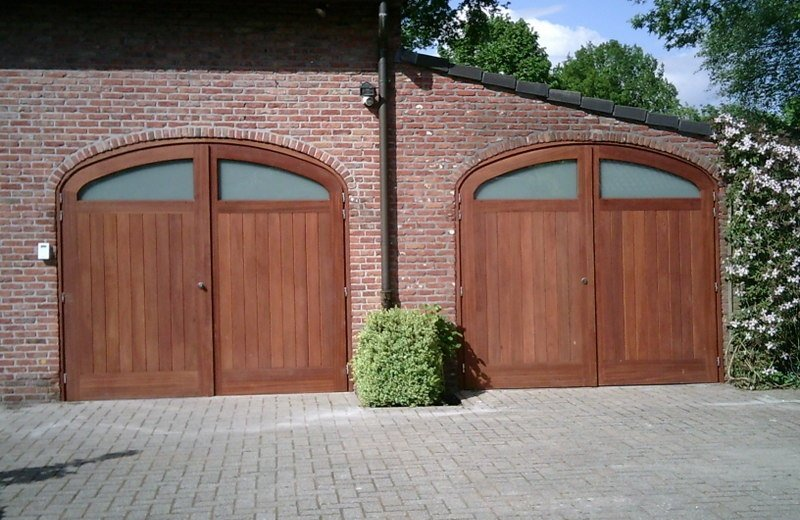
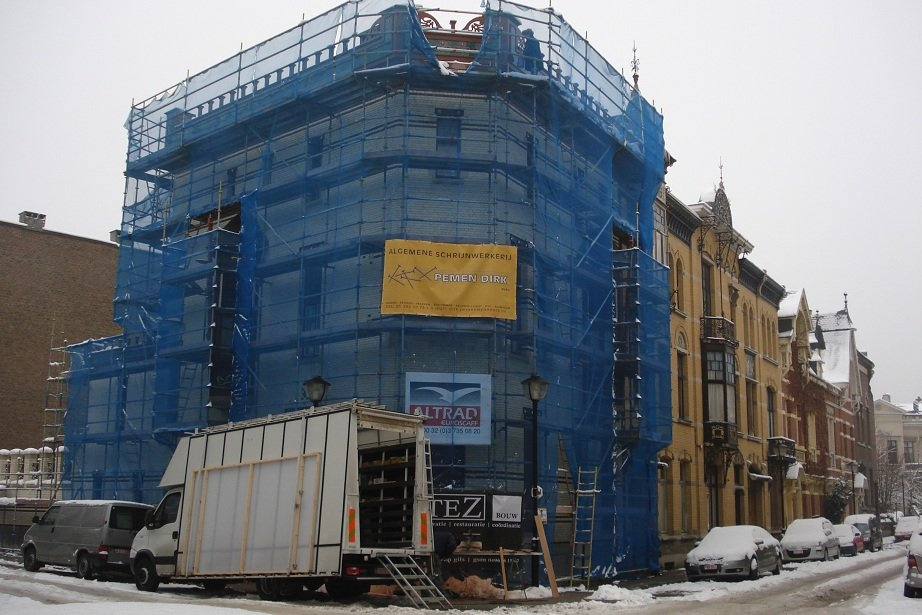
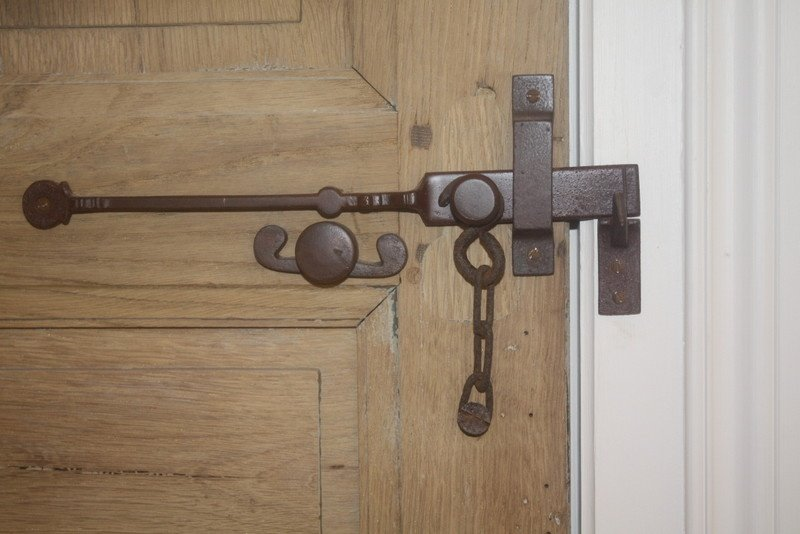
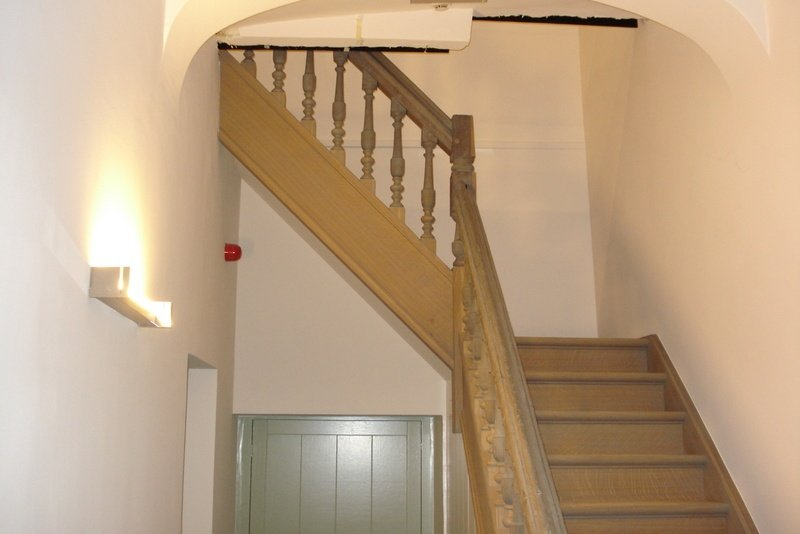
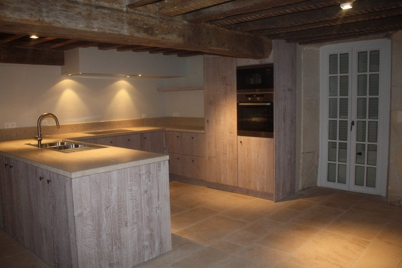
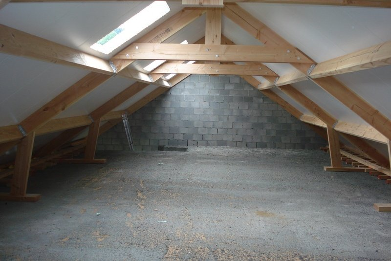

Buitenschrijnwerk
Ramen en deuren als producent, met eigen modellen dankzij maatfrezen. Afwerking die afsteekt tegen standaardramen, aan betaalbare prijzen.
Algemene schrijnwerkerij in Zoersel, bvba sinds 1998
Ramen en deuren, trappen, keukens en kasten, daktimmer en tuinwerk. En de restauratie van houtwerk in geklasseerde gebouwen, met getrokken glas en stopverf.

Gecertificeerd voor het plaatsen van brandwerende deuren
Erkend kwaliteitsaannemer, met meerdere certificaten
Nieuwbouw en renovatie, in België en het buitenland
Begonnen als startend schrijnwerker-vakman, vandaag een firma met een team vakbekwame schrijnwerkers. Groot of klein, nieuwbouw of renovatie: alles wordt op maat gemaakt.
Ramen en deuren als producent, met eigen modellen dankzij maatfrezen. Afwerking die afsteekt tegen standaardramen, aan betaalbare prijzen.
Binnendeuren, gordijn- en rolluikkasten, plinten, bureaus en badkamermeubels, volledig op maat.
Strak of rustiek, met of zonder eiland, licht gebeitst of satijngeverfd. “De kast die het beste past.”
Klassiek of met motieven, zolderladders, en herstelling van leuningen en treden.
Traditionele, spant- en sparringsdaken. Nieuw gebinte voor nieuwbouw of renovatie.
Tuinhuizen, vijverbruggen, terrassen, pergola’s, poorten, brievenbussen en bloembakken.


Door de jaren heen specialiseerden we ons in het restaureren van oude gebouwen, daken en buitenschrijnwerk. Getrokken glas plaatsen met stopverf doen we met de grootste zorg. Authentiek houtwerk restaureren is voor ons een uitdaging die we met respect en nauwkeurigheid aangaan.



Kies het soort werk, beantwoord een paar gerichte vragen en voeg foto’s toe. Dirk weet dan meteen waar het over gaat voor hij u terugbelt.
Project aangevraagd.
Dit is een concept-demo: er werd niets verzonden. Op de echte site komt de aanvraag met foto’s meteen bij info@dirkpemen.be binnen.
We werken vanuit Zoersel in de regio Antwerpen en over heel België. Meermaals trekken we ook de grens over voor projecten in het buitenland.
Stalen bekijken of voorbeelden zien op een afgewerkte werf? Bel even, dan maken we een afspraak.